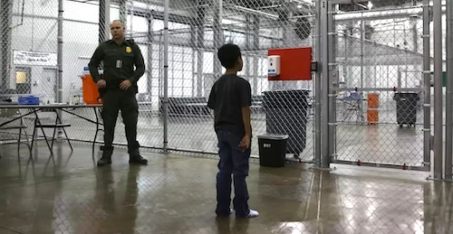

2019-06-19 08:00
With conditions for ICE prisoners deteriorating by the minute, Conservatives lost their minds when Alexandria Ocasio-Cortez called ICE’s facilities for caging children as young as 4 months of age by their proper name — concentration camps. “I don’t use those words lightly. I don’t use those words to just throw bombs. I use that word because that is what an administration that creates concentration camps is,” she said. “A presidency that creates concentration camps is fascist, and it’s very difficult to say that.”
Ocasio-Cortez’s remarks followed an announcement that ICE now has plans to use Fort Sill, a former Japanese “internment” camp in Oklahoma, to “detain” migrant children. ICE operates 168 camps in 23 states for migrant children alone. According to the Densho Encyclopedia which documents this shameful chapter of American history, Fort Sill housed Japanese-American prisoners who “sometimes lived in 100-degree weather with no escape from the hot temperatures. Guard towers “were equipped with 30-caliber machine guns, shotguns, and searchlights. […] On May 13, 1942, a mentally ill internee was shot dead by guards who claimed that he was trying to escape.” Even if it now has air-conditioning Fort Sill will still be a concentration camp, not an “internment” or “detention center” for a new batch of non-white prisoners.
Liz Cheney, daughter of war criminal Dick Cheney, tweeted: “Please @AOC do us all a favor and spend just a few minutes learning some actual history. 6 million Jews were exterminated in the Holocaust. You demean their memory and disgrace yourself with comments like this.”
Blue Dog Democrat Rep. Josh Gottheimer, piled on as well. In a press statement, Gottheimer said, “the comparison is cruel and disrespectful to the six million who were murdered in the Holocaust, including members of my own family. Concentration camps were places where Jews and others were enslaved, tortured, and then sent to gas chambers to be murdered.”
But not so fast. Sure, Republicans and their weak-kneed Democratic allies get a bit peeved when critics of immigration policy point to how many of Trump’s policies had precedents in the Third Reich. A convenient dismissal is that it “disrespects” Holocaust survivors. But the critics have a point — particularly when a neo-fascist, advised and adored by white supremacists, could so easily and quickly convert detention camps into death camps. It’s happened before.
The Jewish Virtual Library notes that the Nazis operated as many as 15,000 collection, labor, and transit camps, collection points, and ghettos. Of these only a fraction were extermination (or death) camps. Even Bergen-Belsen, where Anne Frank died, was not technically an extermination camp — the Nazis called it a “displaced persons camp” — although its prisoners were housed in unspeakable conditions which led to tens of thousands of deaths. And Theresienstadt — where Nazi propagandists portrayed prisoners as practically on vacation — this too was a concentration camp.
Consider, too, the definition found in the Encyclopedia Brittanica: “concentration camp: internment centre for political prisoners and members of national or minority groups who are confined for reasons of state security, exploitation, or punishment, usually by executive decree or military order.” This definition fits precisely the hundreds of thousands of prisoners Trump, by “executive decree,” has placed in American concentration camps — just as the definition applies to the 1.5 million Uighurs in Chinese concentration camps or an unknown number of gay men in Chechen concentration camps.

A world in which facts are disputed and words no longer have any meaning is a dangerous, Orwellian nightmare. Language is important. If the use of “concentration camp” induces a collective meltdown from Trump defenders, then the use of euphemisms like “intern” and “detention” should as well. Guatemalan and Honduran child “interns” are not writing Python code for Google or collecting business contacts at hedge funds. No mentally competent person would say they have been “detained,” as in bad traffic or by a last-minute telephone call.
Let’s stop lying to ourselves. These children are prisoners in a rapidly-expanding network of cruelly-administered American concentration camps.